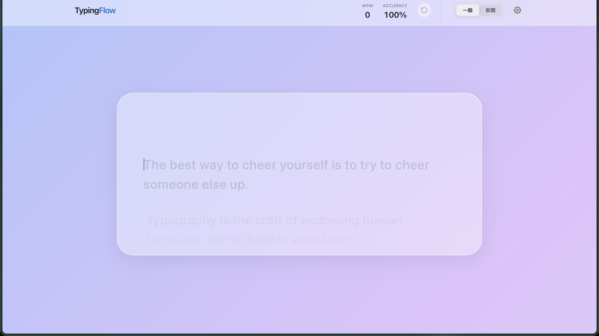
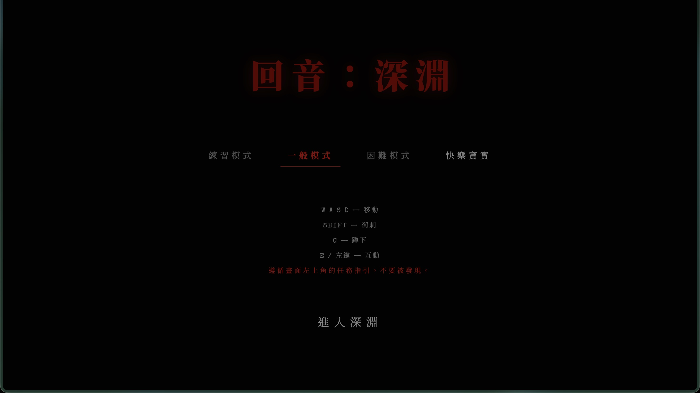
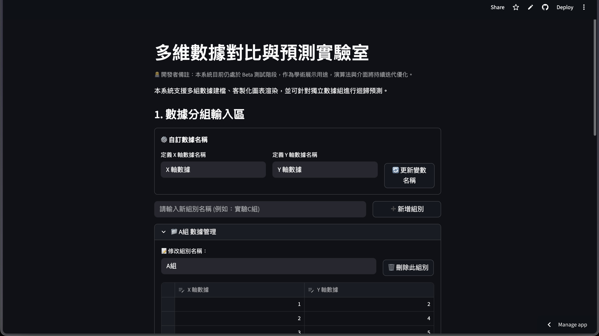

透過自然語言與 AI 協作，將想像力轉化為真實的應用程式。
在這次自主學習中，我放棄了傳統死記硬背語法的方式。透過精準的提示詞（Prompt Engineering）與 AI 進行架構討論、邏輯推演與錯誤排除。最大的挑戰不在於寫出程式碼，而在於如何「正確定義問題」並「驗證 AI 的解答」。
三個專案，展現前端互動、邏輯運算與數據分析能力。
簡潔介面，可調整打n段暫時休息，並記錄階段wpm，純前端實作。新聞功能可憐限制最新新聞作為打字練習。運用 JavaScript 監聽鍵盤事件，計算打字速度與準確率，並提供即時反饋。

純前端實作的沉浸式體驗，內有不少嚇人場景及音效，如有心臟病或癲顯患者不宜遊玩。運用 HTML5 Canvas 繪圖或動態 CSS 製造視覺盲區與音效觸發機制。

部署於 Streamlit 伺服器。運用 Python 進行資料清洗與視覺化處理，展示柱狀圖、回歸直線與洞察報告等等。
